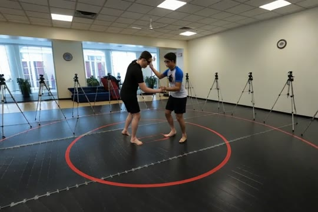
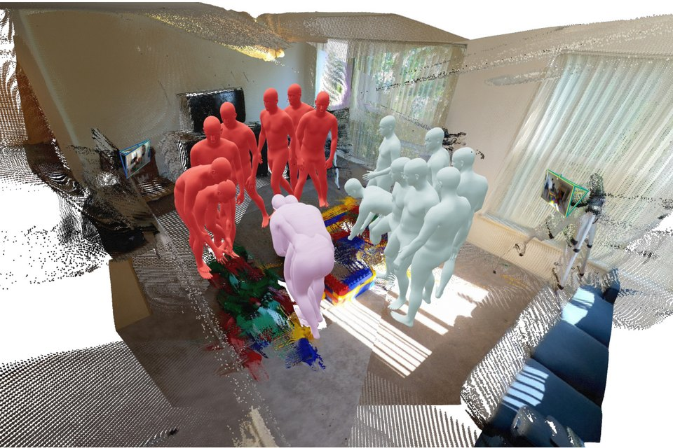

News
- StudioRecon is out on arXiv.
- HARMONI is out on arXiv.
- StudioRecon is accepted to SIGGRAPH 2026.
Publications
-

4D Human-Scene Reconstruction from Low-Overlap Captures
SIGGRAPH 2026
Reconstructs 4D human scenes from sparse, low-overlap cameras by decoupling the background and the people with complementary priors.
-

HARMONI: Aligning Human and Scene Priors for Multi-View 4D Reconstruction
arXiv 2026
Reconstructs multiple people and the scene around them from multi-view video in a single pass.
* Equal contribution
Education
Seoul National University
M.S. in Computer Science and Engineering (incoming), advised by Prof. Jaesik Park
2027.03 –Seoul National University
B.S. in Computer Science and Engineering
2023.03 – 2027.02 (expected)
Experience
Seoul National University
Research Intern, advised by Prof. Jaesik Park
2025.01 – PresentVideo world models and 4D reconstruction.
Personal
Outside of research, I am a fan of Pokémon and the band Oasis.